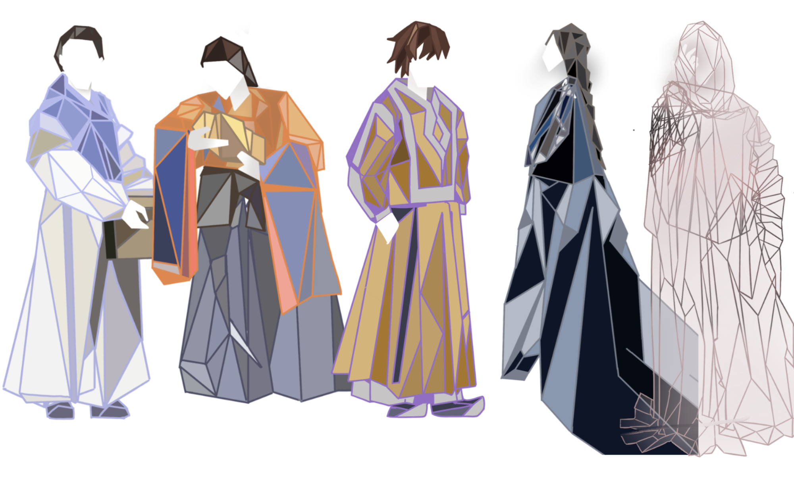
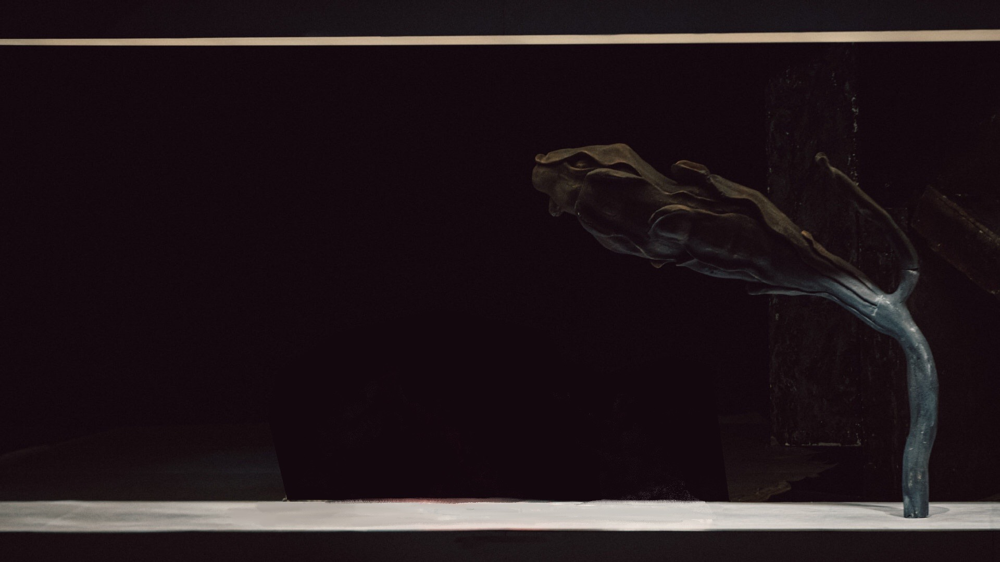

Animation
My animation project, “The Orphan of Zhao,” is a retelling of a classic Chinese story that explores themes
of revenge,
sacrifice, and redemption. Through the use of animation, I aimed to bring this ancient tale to life in a
modern context,
making it accessible to audiences of all ages and backgrounds.
In creating this project, I drew inspiration from a variety of sources, including traditional Chinese art
and
storytelling techniques, as well as contemporary animation styles. I paid particular attention to the
details of
character design, movement, and composition, seeking to create a rich and immersive world that would
captivate viewers
and draw them into the story.
Ultimately, my goal with “The Orphan of Zhao” was to create a work of art that would not only entertain and
educate, but
also inspire reflection and discussion about the universal human experiences that the story portrays.
Through the use of
animation, I believe that I was able to convey the emotional depth and complexity of the characters and
their
relationships, inviting viewers to connect with them on a deeper level and engage with the story in a
meaningful way.
characters

background
